Speakers
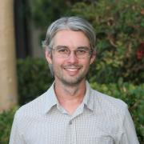
Parker Abercrombie is a software engineer at NASA’s Jet Propulsion Laboratory, where he builds software to support Mars science missions. He has a special interest in geographic information systems, and has worked with teams at NASA and the U.S. Department of Energy on systems for geographic visualization and data management. Parker holds an M.A. in Geography from Boston University, and a B.S. in Creative Studies with emphasis in Computer Science (which he swears is more technical than it...

Lance Albertson is the Director for the Oregon State University Open Source Lab (OSUOSL) and has been involved with many open source projects since 2003. The OSUOSL provides hosting for more than 160 projects, including those of worldwide leaders like Debian Linux, the Linux Foundation and AlmaLinux. The most active organization of its kind, the OSUOSL offers world-class hosting services, professional software development and on-the-ground training for promising students interested in open...
Rami is the DevOps engineer on the Public Cloud team at Workday where he works on building, deploying and managing Workday services and infrastructure on AWS using Cloud Native technologies.
An incredibly handsome open-source software engineer that has contributed to well known projects like KDE and PC-BSD. Despite the fact that software engineering is his calling, he dabbles in many other areas (including but not limited to): radio broadcasting, podcasting, comic illustration, electronics and home-brew.
He's currently working on his own project, Marshmallow Game Engine, a BSD licensed project focused on creating a cross-platform framework for the creation of retro...

Software Engineer specializing in the integration of hardware and software at the lowest levels utilizing Open Source tools, bootloaders, and operating systems such as Linux to rapidly produce quality products. Past product developments have included the TCSX-1 thin client for Advantage Business Computer Systems, the M5900 handheld for American Microsystems Ltd., the PandaBoard for Texas Instruments, and the MinnowBoard Max for Intel.
Jono Bacon is a leading community manager, speaker, author, and podcaster. He is the founder of Jono Bacon Consulting which provides community strategy/execution, developer workflow, and other services. He also previously served as director of community at GitHub, Canonical, XPRIZE, OpenAdvantage, and consulted and advised a range of organizations including Huawei, GitLab, Sony Mobile, Deutsche Bank, HackerOne, and others. He is the author of the critically-acclaimed The Art of Community, is...

Keila Banks is an 15 year old web designer, programmer, videographer and publisher of content making use of mostly open source software. Featured on MSNBC's Melissa Harris-Perry show, keynote at OSCON 2015, PyCon Montreal, Texas Linuxfest, USENIX and subsequent viral video she has been talking the world by storm. She has been a part of SCALE since before birth as her mother manned the registration desk for SCALE 1 while pregnant with her. She, with the help of her father (Phillip Banks...

Josh Berkus spends his time messing around with containers, automation, and community-building for Red Hat Inc. Prior to that, he spent nearly two decades working on PostgreSQL. From his home in Portland, he cooks, makes pottery, and looks after a cat.
John is Technical Lead of Service Infrastructure at Yelp. He loves building scalable backend systems and enjoys uninterrupted sleep. Prior to this, he received his PhD from the University of Cambridge by building compilers for Internet routing protocols.
Cassidy is a UX architect/designer who cofounded elementary LLC. and works as a front-end developer at System76. He's passionate about user experience, open source software, and enabling creators through both hardware and software.
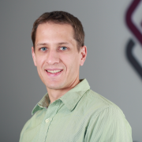
Brenden is an architect in the CTO Office at PLUMgrid where he works on designing software networking infrastructures and analytics tools for Linux. Specifically, he is a key contributor to the IO Visor project, a Linux Foundation Collaborative Project geared towards creating a platform for open programmable data planes for modern IO and networking applications.

David is a Sr. Engineer at SaltStack,Inc and in a previous life was an IT Analyst in government. David has a passion for making technology work for people and businesses and Salt is his favorite tool for making technology bend to his will.

VM (ak Vicky) spent most of her 20 years in the tech industry leading software departments & teams, and providing technical management & leadership consulting for small and medium businesses. Now she leverages nearly 30 years of FOSS experience & a strong business background to advise companies about free/open source, technology, community, business, & the intersections between them.
She is the author of Forge Your Future with Open Source, the first book to detail how...

Jason Brooks is a software analyst with Red Hat, in the company's Open Source and Standards group. Previously, Jason spent 12 years as an analyst and editor with eWEEK Labs, testing and writing about enterprise IT, with a particular focus on Linux and open source software. Jason lives in San Francisco, California, with his wife and two sons.

Yannick is a versatile computer engineer working mostly on open source projects. Recently, he has been helping the Chaire Mobilite lab at Polytechnique Montreal opening the code of their Transition plateform and working on their backend infrastructure. He has also teached embedded software development using OSS tools. And in his spare time, he's helping startups figure out their software development and infrastructure needs. Previously, he was a Production Engineer and Hardware System...
Chet is currently a Principal Engineer at Cisco focusing on delivery engineering for various k8s and container based products.
Chet has more than 20 years of experience working on interesting problems in IT. His career started at a VAR building computer and small business networks. Since then he has held a number of positions including the Director of Enterprise Unix Systems at the University of Southern California (which he graduated from in 2006) and Senior Systems Architect at...

Education Outreach team lead at Red Hat. Red Hat employee since 2001. Co-author of "Raspberry Pi Hacks" (O'Reilly, 2013). Formerly Fedora Engineering Manager, Fedora Packaging Committee Chair, Fedora Board Member, Fedora Engineering Steering Committee Member. In my spare time, I enjoy gaming, geocaching, pinball, hockey, and science fiction.
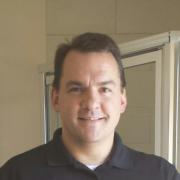
Thomas Cameron is an Open Source technologist with 27 years of experience. He's watched the information technology industry grow from PC servers and client/server architecture to distributed, to cloud computing. He's worked with technologies from Novell NetWare to Windows servers to Linux, and now the cloud. He is a senior solution architect at Amazon Web Services, and was previously a global technology evangelist at Red Hat.

Jorge Castro is a community manager, specializing in Open Source. He is basically a cat herder - a combination of engineering, developer relations, and user advocacy. Jorge graduated with a degree in Telecommunications from Michigan State University and rode with the 11th Armored Cavalry Regiment for four years. He first entered the technology field at SAIC and then moved to system administration at the School of Engineering and Computer Science at Oakland University in Rochester Hills,...

Marco Ceppi has been an Ubuntu community member since 2011, an Ask Ubuntu moderator since 2010, and currently works on the Juju Solutions team as an Engineer for Canonical Ltd.

Alison is an automotive systems programmer and kernel engineer and has worked at Nokia, Mentor Graphics, Peloton Technology and Aurora Innovation. In 2014-2015, she collaborated on-site with a customer in Germany. Alison has spoken at events including ELC and ELCE, USENIX, LibrePlanet, linux.conf.au, Automotive Linux Summit, SCALE and Maker Faire. She lives in Mountain View , CA where she rides bikes, attends concerts, drinks beer and studies German.
Colin Charles is the Managing Consultant at GrokOpen. Previously, Colin was on the founding team of MariaDB Server, and has been around the MySQL ecosystem including being an early employee at MySQL, and worked actively on the Fedora and OpenOffice.org projects. Colin has been a MySQL user since 2000. He's well known within open source communities, enjoys building business and market entry in APAC and has spoken at many conferences.
Amir Chaudhry works at Docker, where he helps make unikernels accessible to developers everywhere, and is the community manager for MirageOS. Most of Amir’s time is spent on open source efforts, and he’s a big fan of automation to maximize developer impact. In previous lives, he led operations at a medical device startup, created a seed investing program, and was a board observer. Amir...

Pamela S. Chestek is the principal of Chestek Legal in Raleigh, North Carolina. She counsels creative communities on open source, brand, marketing and copyright matters. Prior to returning to private practice, she held inhouse positions at footwear, apparel, and high technology companies and was an adjunct law professor teaching a course on trademark law and unfair competition. She is a frequent author of scholarly articles, and her blog, Property, Intangible, provides analysis of current...

I am a software developer for networking equipment. I am an active blogger on technologies that I pick up in my journey to be a cloud expert. Frequent speaker at local VMware User Group (VMUG) as well as vBrownBag. Awarded VMware vExpert 2015. OpenStack ATC (Active Technical Contributor) in which I submit bug fix for Neutron in my spare time. Currently looking at Docker and OpenStack Magnum.

Tennille Christensen is an attorney who specializes in advising start-ups on intellectual property issues and negotiating and drafting technology-related transactions. Tennille first entered the practice of law as a patent agent. However, she was constantly reading about and fascinated by non-patent-prosecution legal issues as well. One of the biggest areas that interested her, software copyrights and legal issues associated with the open source software community, is the reason she became...
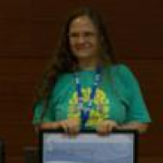
Description: A day in the life of being a Kubuntu Developer. I will describe our current workflow in packaging KDE in a CI environment, moving to debian git to increase collaboration with packaging the massive KDE package set.
Bio: Just a girl with a passion. Actively contributing to Kubuntu as a developer, KDE as DevOps and sysadmin, and a member of the Ubuntu Community Council.

Justin Colannino focuses his practice on patent, copyright, trademark, and trade secret litigation—particularly in the fields of computer hardware, software, and networked services. Justin also advises clients regarding open source software development, including open source license compliance. Justin has an active pro bono practice. In that capacity, he advises non-profit free and open source software projects on all aspects of open source development.
I am the IT department for a small non-profit. We could not accomplish what we do with out Information Technology. One of the big pushes is our websites, they consume much of my time.

Joe Conway is a technology executive with skills in a wide array of disciplines and extensive international business experience. He has been involved with the PostgreSQL community since 1998, presently as a PostgreSQL Committer, Major Contributor, and Infrastructure Team member. He is also the author and maintainer of a PostgreSQL procedural language handler for the R language, PL/R. Joe is currently Head of the PostgreSQL Contributors Team at Amazon Web Services, RDS Open Source Databases...

Working with PostgreSQL since 1999. PostgreSQL Major Contributor.
Currently maintains the PostgreSQL JDBC driver.
Likes to test his knowledge of physics by driving his car on a racetrack.


Peter is a system engineer working as evangelist at One Identity, the company behind the syslog-ng logging daemon. He helps distributions to maintain the syslog-ng package, follows bug trackers, helps syslog-ng users, and talks regularly about sudo and syslog-ng at conferences (SCALE, FOSDEM, Libre Software Meeting, LOADays, etc.). In his limited free time he is interested in non-x86 architectures, and works on one of his PPC or ARM machines.
Staff Engineer at MongoDB in New York City. Author of Motor, the async MongoDB Python driver. Lead developer of the MongoDB C Driver and a member of the PyMongo team. Contributes to the Tornado web framework and to asyncio in the Python standard library.

Owen DeLong is a Senior Manager of Network Architecture at Akamai Technologies and a member of the ARIN Advisory Council. Owen brings more than 30 years of industry experience. He is an active member of the systems administration, operations, and IP Policy communities. In the past, Owen was an IPv6 Evangelist at Hurricane Electric and has worked at Tellme Networks (Senior Network Engineer), Exodus Communications (Senior Backbone Engineer) where he was part of the team that took Exodus from a...
Douglas DeMaio is a Senior Consultant for the openSUSE project, a Free Open Source Software development. He was a marketing intern at Siemens where he managed and developed corporate communication tools for Siemens Healthcare. He worked as a Sales and Marketing Manager for microdrones GmbH where he negotiated business development, design informational products and was the press spokesperson. He has 15 years experience of Public Relations/Marketing/Public Affairs experience. He has worked...
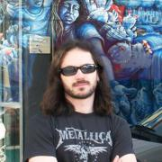
Phil Dibowitz has been working in systems engineering for 15 years and is passionate about scaling systems and open source. He is currently a lead on the Operating Systems team at Facebook, responsible for the bare metal OS itself, configuration management and related infrastructure. Previously he worked on the traffic team automating load balancer configuration management as well as designing and building the production IPv6 infrastructure. Prior to Facebook, he worked at Google managing...
Cory Doctorow (craphound.com) is a science fiction author, activist, journalist and blogger -- the co-editor of Boing Boing (boingboing.net) and the author of the YA graphic novel IN REAL LIFE, the nonfiction business book INFORMATION DOESN'T WANT TO BE FREE< and young adult novels like HOMELAND, PIRATE CINEMA and LITTLE BROTHER and novels for adults like RAPTURE OF THE NERDS and MAKERS. He works for the Electronic Frontier Foundation and co-founded the UK Open Rights Group. Born in...

I am the lead consultant for Command Prompt, Inc.. I am also a Director for United States PostgreSQL and Software in The Public Interest. A Linux and PostgreSQL expert, I have been doing this Open Source thing for 20 years (Yes, really.). A Major PostgreSQL contributor, I have spent the majority for the last 15 years focusing on delivering PostgreSQL based solutions to the wider market.
Florian has worked for 10 years for various Fortune 500 companies as a software-architect, trainer and mentor. In 2008 he built the infrastructure for a startup in Los Angeles. He was infected by the cloud virus and has not yet recovered.
Jennifer Dumas is Vice President of Legal at Chef Software Inc. in Seattle. She brings nearly twenty years of solving complex legal issues for high growth, disruptive companies to her role as Chef's principal legal advisor. She joined Chef from B-Line, LLC, a financial services company, where she was general counsel. Prior to that, she was the global contracts lead at Avanade Inc., where she directed and managed complex commercial agreements and gained a reputation for speedy,...
edunham is an open-source geek of many trades, currently working as a Developer Advocate at Okta. This role has applied skills learned at the OSU Open Source Lab, Mozilla, and other organizations to demystify the worlds of identity and automation. Other hobbies include writing, gardening, and enjoying Oregon's outdoors.

Hello! My name is Christer. I build cool things. I also write, talk and teach about technology. My background has focused on working within the Linux and FreeBSD open source communities. I've specialized in server automation & configuration management, writing documentation and occasionally I make time for programming. I aspire to be the definition of "remote employee" while exploring the Western United States in my converted Promaster. What I do best is help others see how things could...

Ken is a jack of all trades from a network engineering background. He is a decent welder and mechanic, better than passing electronics enthusiast, network management nerd, open source advocate, data consumer, network engineer, sysadmin and public servant. Interests include building strange (neat!) things, exploring the world in 4x4s, HAM tech, search & rescue volunteer, and occasionally take photos of travel adventures. He runs many systems at Willamette University including the campus...
Eileen Evans is the Vice President and Deputy General Counsel of Software, Cloud and Open Source for Hewlett Packard. In her role, Eileen leads and manages legal support for HP Software and HP Cloud and legal and program management support for open source at HP. Eileen also leads and manages senior technology attorneys, engineers and program managers responsible for driving the implementation of HP’s open source strategy and open source community engagement. Eileen represents HP on the...
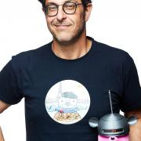
Ron Evans is an award-winning software developer and expert in robotics/IoT/computer vision who is very active in the free and open source community. He has helped clients such as AT&T, Intel, and Northvolt solve some of their most difficult technical and business problems.
Ron has spoken at conferences such as MakerFaire, OSCON, GopherCon, FOSDEM, and the MIT Technology Review. He has been profiled in the press by Wired, Fast Company, and The New York Times. Ron has published...

Ian Eyberg is a founder @ DeferPanic and lives in SF. He has given talks at GopherCon, HighLoad++, OSCon, and DefCon. He is a heavy Go user. He was given his first Slackware floppies over 20 years ago but believes that the cloud of the future will not be based on the monolith but the unikernel.
Mark Fasheh is a Linux kernel developer working for SUSE Labs on file systems. He has over a decade of kernel development experience, mostly in the area of file systems. At SUSE, Mark is a key member of the group responsible for bringing btrfs to SLE12, which included much bug fixing, adding features, and improving performance. Before his work as a professional developer, Mark helped found the UCLA Linux Users Group.
Senior Database Engineer with Crunchy Data Solutions. Author of several popular 3rd-party PostgreSQL tools such as pg_partman, mimeo, & pg_extractor
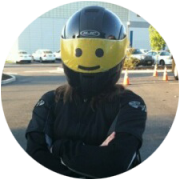
From humble beginnings as a PHP4 web developer in grade school, Amanda now works as a Developer Advocate at GitLab where she gets to share her passion for technology with others. When she's not speaking, writing, or shooing cats off her keyboard, you'll find her consuming APIs and IPAs.
Richard Fontana is Senior Commercial Counsel for Products and Technologies at Red Hat. In addition to serving as Red Hat's lead open source counsel, Richard provides general legal support for Red Hat's engineering and R&D organizations. Richard is a frequent public speaker on topics at the intersection of open source, law and policy. He is also a board member of the Open Source Initiative.
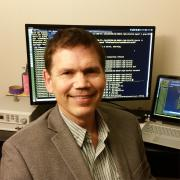
Merlin Friesen has worked in the cellular industry for over 10 years for leading
semiconductor companies such as Samsung, Broadcom and Texas Instruments. He has
lead teams doing device driver and kernel work used in production phone devices
as well as pre and post silicon validation for a wide variety of basebands and
application processors.
His unique background in hardware, semiconductors and system software allows him to
share a complete picture of...
Darron has been building things for the internet since the early '90s when he first discovered Mixmaster remailers and Usenet. In 2014, after running nonfiction studios for 12 years, he moved to Datadog to be a Site Reliability Engineer. Darron enjoys short build times, resilient infrastructure, clusters that keep their quorum and breathing compressed gases underwater.

Stephen Frost is a PostgreSQL Major Contributor and Committer who implemented the PostgreSQL role system and column-level privileges, and who has made contributions to PL/PgSQL, PostGIS, the Linux kernel, and Debian. He has broad experience with the PostgreSQL authentication and authorization system, Multi-Version Concurrent-Control (MVCC), performance tuning (both system-wide and for specific queries), hacking on PostgreSQL itself, the PostgreSQL community, and PostGIS.
Eva Gantz is a latte-powered writer at the intersection of social good, tech, money, and sexuality. She leads global community at Stellar.org, a non-profit working toward financial access for all. Eva also founded Giving Books a Voice, an educational resource for authors who want to find their voice on social media.

Justin is a engineer building communities and solutions.

Richard Gaskin is the owner of Fourth World Systems, a software design and development consultancy in Los Angeles. Since founding the company in 1994, he's developed dozens of commercial and open source applications used by a wide range of organizations, including FedEx, AOL, the US Library of Congress, and thousands of hospitals and universities around the world.
Although he started his career with Mac OS, Richard has since delivered applications for Irix, every version of...

Peter has been involved in PostgreSQL development since 2011 as both a reviewer and feature implementer, and is a major contributor and committer. He has worked on all areas of the codebase, with a recent focus on the standard B-Tree index access method, as well as VACUUM.
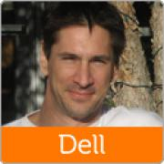
I am a Senior Technologist in the office of CTO, focusing on Dell’s efforts in the DevOps space as well as the open source community. I am also the founder and lead of Project Sputnik, an Ubuntu-based laptop for developers, soon to be in its fifth generation. Besides working with developers, customers, analysts and press I do a fair amount of blogging and tweeting.
Prior to Dell I spent 13 years at Sun Microsystems in a variety of roles from manufacturing to product and corporate...
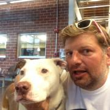

Jenn Greenaway is an early education specialist and open source enthusiast who studied child development at Moorpark College and The University of La Verne. A member of the Mentor Teacher Program in the state of California, she currently works with infants, toddlers, and the adults who hope to become teachers in the near future. She lives in Thousand Oaks with her husband, pets, and computers.

Brendan Gregg is a senior performance architect at Netflix, where he does large scale computer performance design, analysis, and tuning. He is the author of Systems Performance published by Prentice Hall, and received the USENIX LISA Award for Outstanding Achievement in System Administration. He has previously worked as a performance and kernel engineer, and has created performance analysis tools included in multiple operating systems, as well as visualizations and methodologies.
Robert Griesmeyer is a data scientist at Flipboard, a beautiful app for sharing ideas and content about the topics that you have passion for. He also serves as an advisor for Bindez, a personalized news application based in Myanmar, and a participant / advisor for the Go Project. He loves solving interesting problems with data and specializes in recommendation and search algorithms.
Janis Griffin is an Oracle ACE and Performance Evangelist at SolarWinds. She has over 24+ years of DBA experience including design, development and implementation of many critical database applications. Janis has held DBA positions primarily in the Telecom Industry, working with both real-time network routing databases and OLTP business to business applications. Janis has mentored many DBAs and Developers on best practices in database design and performance tuning.
Julie Gunderson is a Sr. Reliability Advocate at Gremlin, where she works to further the adoption of Chaos Engineering principles and methodologies. Over the last seven years, Julie has been actively involved in the DevOps space and is passionate about helping individuals, teams, and organizations understand how to leverage best practices and develop amazing cultures. Julie is also a founding member of DevOpsDays Boise, which recently celebrated its 4th year. When Julie isn’t working, she is...
Wassim Haddad is a principal architect within the Distributed Cloud and Applications Platform incubation group at Ericsson Silicon Valley. He is involved in network virtualization and distributed cloud computing activities. Wassim holds a Master’s degree in Mobile Networks and Services from Ecole Nationale Superieure des Telecommunications de Bretagne (France) and a Master’s degree in Computer Science from St Joseph University in Beirut (Lebanon)

Nathan Haines is an author, instructor, and computer consultant who fell in love with Ubuntu in 2005, and helped found the Ubuntu California Local Community Team to share that excitement with others. As the leader of the California team and a member of the Ubuntu Local Community Council, he works to help others support and share Ubuntu worldwide.
His mission to educate and excite people about Free Software and Ubuntu continues with his book, Beginning Ubuntu for Windows and Mac Users...

Jon "maddog" Hall is the Board Chair Emeritus of the Linux Professional Institute (lpi.org).
During his career in commercial computing which started in 1969, Mr. Hall has been a programmer, systems designer, systems administrator, product manager, technical marketing manager, author and educator.
He has worked for such companies as Western Electric Corporation, Aetna Life and Casualty, Bell Laboratories, Digital Equipment Corporation, VA Linux Systems, SGI and Linaro...
Michael Hall is an open source software developer, community manager and technology evangelist. He has extensive experience in developing desktop and web-based software in a large variety of languages and frameworks, and contributes to a number of open source projects and communities. He currently works at The Linux Foundation, as a community manager and developer advocate for the EdgeX Foundry project.

der.hans is a Free Software, technology and entrepreneurial veteran. He is a repeat author for the Linux Journal with his article about online privacy and security using a password manager as the cover article for the January 2017 issue.
He is chairman of the Phoenix Linux User Group (PLUG), BoF organizer for the Southern California Linux Expo (SCaLE) and founder of the Free Software Stammtisch.
He presents regularly at large community-led conferences (SCaLE, SeaGL, Tux-Tage,...

John 'Warthog9' Hawley led the system administration team on kernel.org for nearly a decade, leading a team including four other administrators. His other exploits include working on Syslinux, OpenSSI, a caching Gitweb, and patches to bind to enable GeoDNS. He's the author of PXE Knife, a set of interfaces around common utilities and diagnostics tools needed by an average systems administrator, as well as SyncDiff(erent) a state-full file synchronizer and file transfer...
Full-stack engineer with four years' professional experience on LAMP stacks, Kate has been playing with Internet technologies for a decade and a half. Her professional life has been dominated by bug-hunting and expansion on sprawling legacy systems, necessitating a love of diving deep into code, trawling through crontabs and dusty log files, and learning how to poke at live servers without upsetting their inhabitants.
Álvaro is a 36 year-old IT entrepreneur, based in Madrid, Spain. Founder
and CTO at 8Kdata (www.8kdata.com), a database R&D company, he spends
most of his time working on the ToroDB (www.torodb.com) project, the
first NoSQL-on-SQL database, a MongoDB-compatible database that runs on
top of PostgreSQL.
He is a passionate software developer and open source advocate. Álvaro
is a Java...

Jason Hibbets is a senior community architect at Red Hat which means he is a mash-up of a community manager and project manager designing programs for people to participate in communities. His current role involves building community interest for #EnableSysadmin--a watering hole for system administrators. He is the author of...
Once upon a time, a lot longer ago then he wished Mark Hinkle was born in a small Pennsylvania town and through the most unlikely sequence of events ended up as a technologist involved in the development and evangelism of free and open source software. Mark has written extensively on open source as the former editor-in-chief of LinuxWorld Magazine and for numerous other publications (Network World, Forbes, Linux.com). Upon the acquisition of Cloud.com(were he was VP of Community) Mark was...
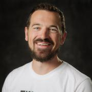
Dan Hopkins is the Directory of Engineering at VictorOps. He likes talking scala, distributed systems and as a Rochester native, garbage plates. At LambdaConf 2014 (http://www.degoesconsulting.com/lambdaconf/), he spoke about how you can’t have a clusterf*ck without a cluster and at Boulder Startup Week, he won over the crowd with his talk, Actor Basics in Big Data. When he’s not getting nerdy or laughing loudly, you can find him...

Jonah Horowitz is a Senior Site Reliability Architect at Netflix with over 20 years of experience keeping servers and sites online. He started with a home-built BBS and has worked at both large and small tech companies including Walmart.com, Looksmart, and Quantcast.
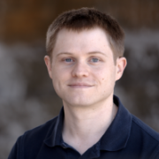
Michael Hrivnak is a Principal Software Engineer at Red Hat. After leading development of early registry and distribution technology for container images, he became involved with solving real-world orchestration problems on Kubernetes. He now works on the Automation Broker and Operator SDK, projects that automate application management on Kubernetes by incorporating tools such as Ansible and Helm. Experienced in both software and systems engineering, Michael is excited to be writing software...
After spending the past few years working at various software companies in beautiful Boulder, CO I now spend my days making on-call suck less by designing and building software on the platform engineering team at VictorOps. When I'm not doing that, I'm either climbing up rocks, or riding down them on a bicycle, or enjoying small batch coffees. Ask me about my favorite espresso.

Elizabeth K. Joseph leads the Open Source Program Office for IBM Z (mainframes!). Previously, she spent time working on Apache Mesos, and four years as a systems engineer on the OpenStack Infrastructure team and six years on the Ubuntu Community Council and has held various roles in the Ubuntu community and is the co-author of The Official Ubuntu Book, 8th and 9th Editions. At home in San Francisco, she sits on the Board of Directors for Partimus.org, a non-profit in the Bay Area providing...

Alex Juarez is a Principal Engineer at Rackspace, touting 10 years with the company. Alex enjoys all things Linux, especially training and mentoring others, and is incredibly qualified to do so as an RHCA/RHCI. When Alex isn't helping others he's crafting killer cocktails and finding the best spots to grub in San Antonio.

Frank Karlitschek is a long time open source developer and former board member of the KDE e.V. In 2016 he founded Nextcloud to create a fully open source and decentralized alternative to big centralized US cloud companies. In 2012 he initiated the User Data Manifesto to define basic human rights regarding personal data. Frank was an invited expert at the W3C to help to create the ActivityPub internet standard. Frank has spoken at MIT, CERN, Harvard and ETH and keynoted several conferences....
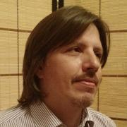
Maxim has two decades of technical and business development experience at large IT companies. Maxim founded a series software product and services companies, championed the first commercial research institute in Russia. He holds MSE in Technology Management from University of Pennsylvania. Maxim is the original author of Erlang on Xen.
__q_itok=__z-_z-E.jpg)
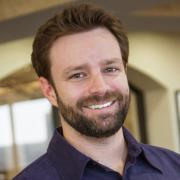
Dustin Kirkland is Canonical's Cloud Solutions Product Manager, leading the technical product strategy, road map, and life cycle of the Ubuntu Cloud commercial offerings.
Formerly the CTO of Gazzang, a venture funded start-up acquired by Cloudera, Dustin designed and implemented an innovative key management system for the cloud, called zTrustee, and delivered comprehensive security for cloud and big data platforms with eCryptfs and other encryption technologies.
Dustin is...
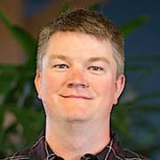
I'm a systems engineer who has been using Linux since 2001. I currently wrangle servers and developers at Stripe, wrangle 2 cats and a corgi at home, and spend my spare time wandering around Portland taking pictures of cats.
Koda Kol is IT Professional and Educator.
Yolanda Kol is an educator based in Los Angeles, CA. Her mission is focused on ensuring academic opportunities to overcome the achievement gap by bridging the digital divide. Topics of interest include: open-source educational resources, women in technology, and the impact of technology in employment and higher education.

Kirill Kolyshkin was named leader and project manager for the OpenVZ project in 2005 to further the adoption of containers virtualization for Linux. He spearheads the overall development and manages all key architecture, updates and feature upgrades for OpenVZ. Kolyshkin has more than 10 years Linux experience and has long been an active open source advocate. He is a frequent speaker about virtualization technology and his 15-years career experience includes positions in information...
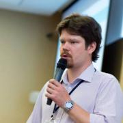
Ilya Kosmodemiansky is a CEO and co-founder at Data Egret. A consultancy specializing in PostgreSQL migration, maintenance and support.
Ilya has a broad experience working with PostgreSQL as consultant, architect and administrator. His main focus is database performance and optimization. He sees the mission of PostgreSQL in substituting the commercial databases in high-performance mission-critical applications.
His interests are promoting PostgreSQL as enterprise-ready database...
Spencer Krum is a Developer Adovcate at IBM. He writes python (and recently go) applications to analyze esports and deploys them on kubernetes. Before that, he administered the development infrastructure for OpenStack and wrote a book on Puppet. He lives and works in Minneapolis. He likes cheeseburgers, tennis and StarCraft II.
Simon Kuenzer received his degree in Computer Science at the University of Karlsruhe and is working as a research scientist at the European research lab of NEC in Heidelberg, Germany. He is interested in systems work, and in particular performance optimizations of packet I/O, operating systems, and virtualization technologies.
Vibhor Kumar is a principal system engineer at EnterpriseDB. He joined the company in 2008 to work with Postgres after having worked with Oracle systems for three years. His experience includes team leadership roles at IBM Global Services and BMC Software and some years as an Oracle database administrator at CMC Ltd. He earned his bachelor’s degree in computer science at the University of Lucknow and his master’s degree in computer science at the Army Institute of Management, Kolkata.
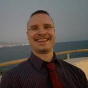
Lars Kurth is a highly effective, passionate community manager with strong experience of working with open source communities (Symbian, Symbian DevCo, Eclipse, GNU) and currently is the community manager for the Xen Project. Lars has 11 years of experience building and leading engineering teams, strong experience of working with open source communities, with a track record of executing several change programs impacting 1000+ users, complemented by strong analytical, communication,...
Aleksandr Kuzminsky is a MySQL expert and data recovery specialist
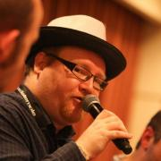
Stuart Langridge does consultancy and custom development for the web, mobile web, and Ubuntu. Code, writings, and business details (and the occasional rant) are to be found at http://kryogenix.org and @sil on Twitter; Stuart is to be found outside in the rain looking for the smoking area.
Dru Lavigne is the Community Manager of the PC-BSD project and the lead documentation writer for the PC-BSD and FreeNAS projects. She is author of BSD Hacks, The Best of FreeBSD Basics, and The Definitive Guide to PC-BSD. She is founder and current Chair of the BSD Certification Group Inc., a non-profit organization with a mission to create the standard for certifying BSD system administrators, and serves on the Board of the FreeBSD Foundation.
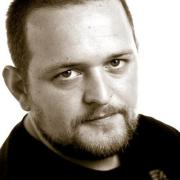
John has been designing and building user interfaces and leading teams for over 17 years, with key achievements including designing Europe’s first 3G rich mobile app for the BT Isle of Man 3G trial and leading UI dev for the Euro2000 football championship website which achieved the Guinness Book of Records record for most-visited event website in internet history.
For the last 6 years John has been at Canonical and has worked on the design of every version of Unity from the UNE...
I am a 9 year old student. I have gone on to rural Mexico 4 times with Kids on Computers to help set up computer labs. I helped kids in computer labs that don't really know how to use the computer. I made friends with the boys at the schools where we set up computer labs. I help my teacher use the computer at my school. In my free time, I like to fish.
Gina Likins has been working in internet strategy for more than 20 years, participating in online communities for nearly 25, and working in open source for more than three. Back in 1994, she presented her first talk about the internet, called "Netiquette: How to avoid getting flamed online," and she's spent the intervening time developing her own theories about how and why communities go sour (or conversely, grow strong).
Aside from her interest in the internet,...

Stephanie is President / Linux Consultant at VCT Labs, an Engineering Services company composed largely of long-time Linux enthusiasts, some of whom are also long-time SCALE participants. Stephanie has attended and greatly enjoyed every single SCALE thus far, and after several stints of volunteering at various booths (SBLUG, Gentoo, and WebOS Ports to be specific), it's time for a turn at the speakers podium, taking this opportunity to share some embedded Linux experience acquired over...
Bryan Lunduke writes books about Linux. Then he writes articles about Linux. Also podcasts about Linux. Rumor has it he also does marketing work related to Linux. Linux, Linux, Linux. Plus Linux.
Anil Madhavapeddy is faculty at the University of Cambridge, and the CTO of Unikernel Systems. He was on the original team that developed the Xen hypervisor, and helped develop an industry-leading cloud management toolstack written entirely in OCaml. This XenServer product has been deployed on hundreds of thousands of physical hosts, and drives critical infrastructure for many Fortune 500 companies. Prior to obtaining his PhD in 2006 from the University of Cambridge, Anil had a diverse...
Heikki Mahkonen is a senior researcher in IP and Transport group at Ericsson Research. He joined Ericsson Research in 2000. During his 14 years in Ericsson Research he has been involved in many different research projects ranging from video coding and IP routing and mobility to M2M networking and from 3GPP network technologies to cognitive network management technologies. He holds a Master’s degree in Networking and Software Technologies from Helsinki University of Technology. His current...
Ravi Manghirmalani is a senior researcher in IP and Transport group at Ericsson Research. He has a Master’s degree in Computer Science and Engineering. His current research interests include Software Defined Networking, cloud and virtualization technologies.
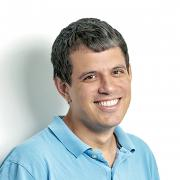
John Marrett is Director of Managed Service at Stack8 Technologies Inc. John comes from a security focused background in system and network administration. He currently concentrates his work on network device configuration management and open source routers in large managed service environments. He has previously presented on Open Source Routers and Openwrt https://zioncluster.ca/openwrt/ . John is the proud discoverer of CVE-2014-2428...
Don Marti has written for Linux Weekly News, Linux Journal, and other publications. Don co-founded the Linux and web consulting firm Electric Lichen, which he and business partner Jim Gleason later sold to VA Linux Systems. Don has served as president and vice president of the Silicon Valley Linux Users Group and on the program committees for Uselinux, Codecon, and LinuxWorld Conference and Expo. He was a key organizer for Windows Refund Day, Burn All GIFs Day, FreedomHEC, and the movement...
Sandro is the MidoNet Community Manager, fully committed to fostering the MidoNet community. Thus, he's usually busy with enabling contributors to collaborate more easily and efficiently, and with growing the user and contributor base. Furthermore advocating and promoting both MidoNet and the MidoNet community, he's a strong believer in the MidoNet community's objectives of creating the best possible network virtualization software, and turning it into the ubiquitous solution...

After several years in Japan, Justin Mayer now designs and builds software products in Santa Monica. He is an active open-source contributor and the primary maintainer of Pelican, a popular static site generator.
Colin McCabe is a Platform Software Engineer at Cloudera, where he works on HDFS, Kudu, HTrace, and related technologies. He is a committer on Hadoop. Prior to joining Cloudera, he worked on the Ceph Distributed Filesystem, and the Linux kernel, among other things. He studied Computer Science and Computer Engineering at Carnegie Mellon.
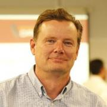
Jeff is a software architect at Crunchy Data that has developed the open source project Crunchy Postgresql Manager (CPM), a Docker based Postgres-as-a-Service platform. CPM allows for the creation of a Docker based Postgresql cloud, along with management and administration features. Crunchy Data is an open source Postgresql company, offering consulting, support, and unique products that work with open source Postgresql.
Heather Meeker is a partner in O’Melveny & Myers’ Silicon Valley office. She advises clients on technology matters, including licensing and collaboration arrangements, software copyright and patent issues, and investments, mergers and acquisitions. She is an internationally-known specialist in open source software licensing. In 2012, Best Lawyers named her its “San Francisco Information Technology Law Lawyer of the Year.” The Daily Journal named Meeker to its list of “Top 100 Women...
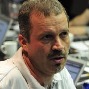
Michael Meskes is CIO of Instaclustr, the one-stop destination for deploying, managing, supporting, and monitoring all open source components of the data layer and related infrastructure. He also manages credativ and its Open Source Support Center that employs leading members of a number of open source projects. He has been an open source developer for nearly thirty years working on different open source projects among which Debian and PostgreSQL are most widely known. Michael has engaged...

Max Mether, a native of Finland received his M.Sc (Eng) in Physics and Maths from Helsinki University of Technology. Max joined MySQL in 2001 starting as a Consultant and an Instructor, where he ended up creating the MySQL training program and managing the curriculum under MySQL Ab and later at Sun. As a co-founder Max now manages the training department at SkySQL and helps advance the MySQL eco-system around the world. Max is a frequent speaker at LinuxFests and MySQL conferences around the...

Carlos Meza has gone from sysadmin to developer. At Verizon, he managed large scale infrastructure for the EdgeCast CDN. As an SRE for Everbridge, he was responsible for systems that provided real-time alerting for those in life-threating situations. At Disney, he has developed tools for auditing for compliance and security.
Carlos is a long-time member of the SGV Linux User Group; runs the Software Engineering Meetup in Los Angeles; mentors at Girls Who Code.
For fun, he...
Jim Mlodgenski is CEO and co-founder of StormDB. Prior to StormDB, Jim was Founder of Cirrus Technologies, a professional services company focused on helping move database centric applications to the Cloud. Before that, Jim was Chief Architect at EnterpriseDB. While at EnterpriseDB, in addition to the role of Chief Architect, he also was VP of Technical Services running Sales Engineering, Professional Services, Training and Customer Support.
Bruce Momjian is co-founder and core team member of the PostgreSQL Global Development Group, and has worked on PostgreSQL since 1996. He has been employed by EDB since 2006. He has spoken at many international open-source conferences and is the author of PostgreSQL: Introduction and Concepts, published by Addison-Wesley. Prior to his involvement with PostgreSQL, Bruce worked as a consultant, developing custom database applications for some of the world's largest law firms. As an...
Kevin started working with Linux when Tupac was still making albums (and not the posthumous stuff). Projects during his tenure at IBM covered a wide range of development, from tiny embedded operating systems to Linux enablement of the POWER8 hardware platform.
Kevin moved to Canonical in 2014 with his focus set on modeling workload deployments at scale. He found his niche on the Juju Big Data team, where his mission is to wrangle the cumbersome install and configuration of Big Data...
Richard Mortier is a University Lecturer in the Systems Research Group at the Cambridge University Computer Lab. He has previously worked in roles from platform architect to developer in a broad range of companies, including startups and corporates in both the US and UK. Past research includes Internet routing, distributed system performance analysis, network management, aesthetic designable machine-readable codes, and home networking. He now works in the intersection of systems and...
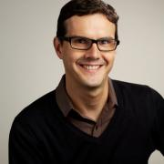
Daniel Nazer is a Staff Attorney on the Electronic Frontier Foundation's intellectual property team, focusing on patent reform. Prior to joining EFF, he was a Residential Fellow at Stanford Law School’s Center for Internet and Society. Daniel also practiced at Keker & Van Nest, LLP, where he represented technology clients in patent and antitrust litigation. Daniel clerked for Justice Susan Kenny of the Federal Court of Australia and Judge William K. Sessions, III of the U.S....

Deb Nicholson is a free software policy expert and a passionate community advocate. She is the Director of Community Operations at Software Freedom Conservancy where she supports the work of its member organizations and facilitates collaboration with the wider free software community. Formerly, she has served as the Community Outreach Director for the Open Invention Network, a shared defensive patent pool on a mission to protect free and open source software and the Membership Coordinator...
As Head of AI Community Engagement, Dave runs events such as hackathons that help developers learn how to use GenAI developer tools like LLMs and MongoDB Vector Search. Dave graduated from Cal Poly: SLO and has worked in developer relations at companies like PayPal, Strikeiron, Redis, Intel, Traceable, Dremio, Harness and now MongoDB. Dave gained modest notoriety when he proposed to his girlfriend in the book "PayPal Hacks"

Duane O’Brien is an independent researcher focused on open source funding and sustainability. He loves driving this passion through collaboration and conversation. Duane is a force of chaotic good, using his high stats in intelligence and charisma to advocate for the open source community.
I'm an SRE manager working on deploying scalable solutions for The Walt Disney Company. Previously I worked at DreamWorks Animation where I supported the render farm, core systems team, and new business initiatives. Making it easy to run applications well by providing a paved road w/ best practices built in.
Find me on Twitter @dontrebootme
Adrian serves as a Distinguished Architect at Rackspace. He is an active technical contributor to OpenStack, the chair of the OpenStack Containers Team, and PTL of OpenStack Magnum. In his free time he serves as a coordinator for the Docker Los Angeles Meetup group. Adrian is passionate about next generation cloud technology, and believes that true collaborative development is significantly more powerful than individual companies working in isolation.
See also:
...
A Linux user since 1995 and a long-time Open Source advocate, Russ has spoken over 100 times at Open Source events. He was an Open Source columnist for magazines (Infoworld, Processor), author of one of the earliest books on Open Source, and a weekly panelist on the long-running website "The Linux Show". Until recently an evangelist for the Xen Project for Citrix, Russell is currently looking for a new position. He has a passion for conveying the heart of Open Source: a movement...
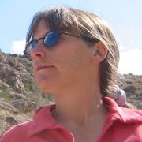
Akkana Peck is a freelance programmer and writer who has been involved with the open source community for decades. She has contributed code to Mozilla, GIMP and a variety of other projects. She's also involved in education and advocacy groups and is one of the "Tres Chix" LinuxChix coordinators.
Akkana is also the author of "Beginning GIMP: From Novice to Professional" and has written an assortment of tutorials for various online publications, including her...

Jerome is a senior engineer at Docker, where he helps others to containerize all the things. In another life he built and operated Xen clouds when EC2 was just the name of a plane, developed a GIS to deploy fiber interconnects through the French subway, managed commando deployments of large-scale video streaming systems in bandwidth-constrained environments such as conference centers, operated and scaled the dotCloud PAAS, and various other feats of technical wizardry. When annoyed, he...
Stormy Peters leads the Community Leads team at Red Hat. Previously at SCALE she has given the "Would you do it again for free?" keynote as well as several talks on community management.
Stormy is passionate about open source software and educates companies and communities on how open source software is changing the software industry. She is a compelling speaker who engages her audiences during and after her presentations.
Before joining Red Hat, Stormy was VP of...

Christophe has been working with PostgreSQL since 1997. He is the CEO of PostgreSQL Experts, Inc.
Brandon Philips is helping to build modern Linux server infrastructure at CoreOS as CTO. Prior to CoreOS, he worked at Rackspace hacking on cloud monitoring and was a Linux kernel developer at SUSE. As a graduate of Oregon State's Open Source Lab he is passionate about open source technologies.

People person, technology enthusiast and all-things-open evangelist. I have managed and marketed communities for more than a decade, getting started in the KDE community, followed by working as openSUSE Community Manager at SUSE and co-founded Nextcloud. At Nextcloud I head up our marketing efforts, writing, speaking at and organizing...
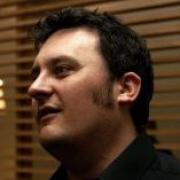
Alan has been a user of Ubuntu and active contributor to the project since 2006. He's held numerous leadership positions within the Ubuntu project and more recently started working for Canonical on Ubuntu Phone software. He's recently worked in supporting new users, reviewing code, testing applications and mentoring new users and developers. Alan likes cats.
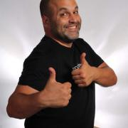
Steve is a Dad, Son, Partner, and PaaS Dust Spreader (aka developer evangelist) with OpenShift. He goes around and shows off all the great work the OpenShift engineers do. He can teach you about PaaS with Java, Python, PostgreSQL MongoDB, and some JavaScript. He has deep subject area expertise in GIS/Spatial, Statistics, and Ecology. He has spoken at over 75 conferences and done over 50 workshops including Monktoberfest, MongoNY, JavaOne, FOSS4G, CiscoLive, Fluent, DevNation, Where2.0, and...
Roger Powell is Associate Professor and Faculty Chair of the Computer Science and Computer Information Technology Department at San Bernardino Valley College. He has attended several SCaLE conferences over the years and recommends them to his students. Professor Powell is a supporter of free speech and freedom of expression whether it be Academic Freedom or Free Software. He is proud and continuing member of the Electronic Frontier Foundation ever since he first discovered them at SCaLE 7...

Brian Proffitt is currently the Senior Manager, Community Outreach team for Red Hat's Open Source Program Office. A long-time member of the free and open source software community, Brian is the author of several books on Linux, iOS, and other odd operating systems, as well as former technology journalist from ReadWrite, ITworld, LinuxPlanet, and Linux Today.

Corey is the Chief Cloud Economist at The Duckbill Group, where he specializes in helping companies improve their AWS bills by making them smaller and less horrifying. He also hosts the "Screaming in the Cloud" and "AWS Morning Brief" podcasts; and curates "Last Week in AWS," a weekly newsletter summarizing the latest in AWS news, blogs, and tools, sprinkled with snark and thoughtful analysis in roughly equal measure.
I am a sociologist turned full stack engineer turned VP of Engineering at Nordstromrack.com | HauteLook in Los Angeles. I write PHP during the day at work and am a Rustacean at night. I spent a past life writing a lot of C and used that knowledge to help maintain the pecl/memcache and pecl/gearman extensions. I am also very passionate about creating and consuming hypermedia APIs, in particular Hal.
Outside of technology, I enjoy homebrewing, hiking, camping and reading.
Carrie is the first STEM Program Manager for the Girl Scouts of San Gorgonio Council serving Riverside and San Bernardino Counties. She has worked in the field of science education since 1997. She is dedicated to empowering girls in STEM fields.
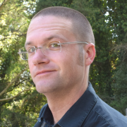
Kyle Rankin is a security and infrastructure expert with over two decades of professional Linux experience. He is the author of How To Write A Tech Book, The Best of Hack and /: Linux Admin Crash Course, Linux Hardening in Hostile Networks, DevOps Troubleshooting, The Official Ubuntu Server Book, Third Edition, Knoppix Hacks, 2nd Edition, and Ubuntu Hacks, among other books. Rankin was an award-winning columnist and tech editor for Linux Journal, and speaks frequently on Free and Open Source...
Bryan Reinero is a Developer Advocate for MongoDB, helping the community of users grow. Formerly a Senior Consulting Engineer at MongoDB, Bryan helped users optimize MongoDB for scale and performance and a was contributor to the Java Driver. Earlier, Bryan was Software Engineering Manager at Valueclick, building and managing large scale marketing applications for advertising and real-time bidding. Earlier still, Bryan specialized in software for embedded systems at Ricoh Corporation and...

Bob Reselman is an internationally known software developer, system architect, industry analyst, courseware developer and technical writer/journalist. He is presently Senior Technical Analyst at Blockchain Journal. Bob has written a number of books and hundreds of articles on a variety of indepth technical topics for publications such as Red Hat Architect, DevOps.com, TechTarget, and DZone to name a few. Bob is one of Instruqt's premiere development partners. He has also...
Christefano is one of the Larks at Exaltation of Larks, a Drupal design and engineering firm; and is a founder of Droplabs, a network of coworking spaces that has a strong focus on open source software developers, startup mentoring and coworking and small business services.
In his free time, he helps organize Greater Los Angeles Drupal (GLAD), one of the most active Drupal user group...
Simon is a PostgreSQL Committer and long term Major Contributor to the PostgreSQL open source database project. Simon is currently the CTO of 2ndQuadrant, one of the leading PostgreSQL Development & Support companies. Simon has worked as a Database Architect for 30 years, with wide experience on PostgreSQL. Teradata, Oracle and DB2 for large scale enterprise database applications.

I motivate, mobilize, and connect cross-functional teams with technical solutions and support and provide customer-focused Computer Professional services with System Administrator experience in commercial and non-profit industries.
I deliver system, network, and security support in a wide variety of business and home environments. I partner with clients for training and end-developer support efforts, especially in the areas of configuration management, operating system integration...
Nicholas is an independent grassroots developer based in San Francisco Bay Area.
During 2015 he organized the Inaugural Aegir Summit, themed Commercial Free Software Hosting, with Drupal, Drush and Aegir at the nyccamp hosted within the United Nations.
He is looking to organize a Self Hosting Summit within nyccamp at the United Nations in 2016.
He is interested in polyglot development and application integration, and self hosting in general.
For more, see...
Didier has been a long time Ubuntu contributor and a Free software advocate. After having used Linux for years and particularly Debian, he was an early adopter of this new Ubuntu distribution at the time and started to be involved as an activate member of the French community, writing user and admin oriented books, organizing events and giving talks. He then jumped to the more technical side and joined the great family of Ubuntu developers as a benevolent contributor.
For the last 6...
Gabrielle Roth has been using Postgres since sometime in the version 7s, and thinks that the best part of using Open Source software is the culture of sharing knowledge. She's a co-founder and former co-lead of PDXPUG.
Nithya Ruff is the Senior Director of Comcast's Open Source Practice. Her charter is to drive common open source practices and strategy across Comcast. She is also Director-at-large on the Linux Foundation Board of Directors. She first glimpsed the power of open source while at SGI in the 90s and has been building bridges between hardware developers and the open source community ever since. She’s also held leadership positions at Western Digital, Wind River (an Intel Company),...
Joel is a seasoned engineer and emerging engineering leader in the employ of Nordstrom with their online, off-price division. He has been using computers since before he could read. In a former life, he cut his teeth in a traditional systems administrator role. Nowadays he is glad to usher in the Age of DevOps and write software to solve systems and platform problems. He has helped scale NordstromRack.com|HauteLook.com from demand of $300M a year to well over $800M in FY2015. He enjoys the...
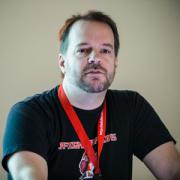
Jim Salter (@jrssnet) is an author, mercenary sysadmin, and father of three—not necessarily in that order. He got his first real taste of open source running Apache on his very own dedicated FreeBSD 3.1 server back in 1999, and he's been a fierce advocate of FOSS ever since. He's the author of the Sanoid hyperconverged infrastructure project (http://sanoid.net/). And he's written articles for Ars Technica on everything from next-gen...
Eric Schultz is an independent software engineer and open source consultant. Most recently he was the Community Manager at prpl Foundation with a particular focus on building the OpenWrt community. Prior to this, Eric worked as Developer Advocate at Outercurve Foundation where he managed and supported the foundation’s 25 open source projects. Eric has collaborated with employees from dozens of companies to create free and open source software that improves lives. He has a passion for the...

Sergio works at Canonical and is the lead for snapcraft, he has been dedicating his time to all things snappy, these days mostly focused on the developer experience around it. He has previously been more involved in Ubuntu Core and the core of snapd itself; he came from working on the Ubuntu Phone effort as part of the Phone Foundations team advocated to the plumbing layers.
He has previously worked for Intel and Motorola with similar software engineering roles.
...
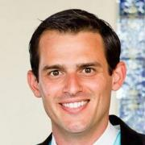
Jeremy is the Executive Director and Cofounder of World Possible. Jeremy has led World Possible since he became the organization's first Executive Director in October 2012. Prior to running World Possible, Jeremy was a venture capital associate at Norwest Venture Partners focused on growing for-profit education and technology enterprises. Before Norwest, Jeremy spent four years as an investment banking Associate at Wells Fargo. Jeremy graduated UCLA with a dual degree in business...
Nick Shadrin is a web application delivery professional with many years of international experience. He has worked in various roles for major IT vendors and cloud companies, and currently resides in San Francisco where he works as a technical solutions architect for Nginx. Nick has implemented website optimization systems for well-known websites and major enterprises.
Andrew Clay Shafer (@littleidea): Andrew, Pivotal Senior Director of Technology, has been a consumer and contributor to open source for many years. He is always up for an adventure with a broad background contributing to technology and business efforts. As a co-founder at Puppet Labs, followed by working in and around the CloudStack and OpenStack ecosystems, he gained a lot of perspective on building open source businesses and communities. Sometimes he has been known to talk about devops...
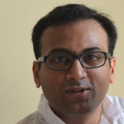
Amit has been working on FOSS since 2001, and QEMU/KVM virtualization since 2007. He's currently employed by Red Hat. He's worked on several areas within QEMU/KVM virtualization. He currently co-maintains the live migration subsystem in QEMU/KVM. He also maintains other subsystems for the Linux kernel and QEMU, notably virtio-serial and virtio-rng.
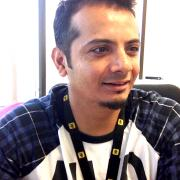
Imran is an elastic compute enthusiast who is devising distributed technologies that work at über scale. Presently, he is a Lead/Architect at YellowPages and is leading containers and orchestration initiative at YP.
He is a proven technical leader with an industry experience of 13+ years working with Fortune 500 companies like Yahoo. He leads high performance teams supporting mission critical systems. He has substantial experience running a globally distributed production environment...
Sarah Sharp is a Linux graphics software developer, and has been running Debian-based Linux systems since 2003. She was a Linux kernel developer from 2006 to 2013, and is the original author of the Linux USB 3.0 xHCI host controller driver.
Sarah is also a co-coordinator for Outreachy, a paid internship program for increasing diversity in open source programs. Applications are open to women (cis and trans), trans men, and genderqueer people, and United States residents of any gender...
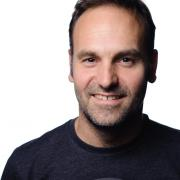
Mark is founder of Ubuntu and leads product design at Canonical.
Mark founded Thawte, an internet commerce security company in 1996 while studying finance and IT at the University of Cape Town. In 2000 he founded HBD, an investment company, and created the Shuttleworth Foundation to fund innovative leaders in society with a combination of fellowships and investments. In 2002 he flew to the International Space Station as a member of the crew of Soyuz mission TM34, after a year of...

Eduardo is an entrepreneur and software engineer. He is currently one of the Fluentd project maintainers and creator of Fluent Bit, a lightweight Logs and Metrics processor. He also is the founder of Calyptia (the Fluent company).
Josh Simmons is a community strategist, open source advocate, and dusty foot philosopher. He works on the Google Open Source Programs Office (OSPO) Outreach Team and serves as volunteer CFO for Open Source Initiative (OSI). Josh coordinates open source communications across Google and helps run programs such as Google Summer of Code, all while traveling the world to promote free and open source software, inclusive community building, and teaching aspiring and junior developers how to learn...
About Me: I am a United States Coast Guard Veteran, 1995 to 1999 and 2001 to 2002 active enlisted member. I started a career with the California Department of Corrections in 2000, and went on to promote within the department to Correctional Sergeant in 2005, ending my career in August of 2013. My choice to resign stemmed from lack of family time with my son, I was workaholic (in a prison), it was not healthy for me or my child. I felt like I was missing out on my son's childhood,...
Schuyler St. Leger is a young maker in Arizona. He enjoys working with both hardware and software. His interests include 3D printing, electronics, hardware and software programming, software defined radio (SDR), robotics, computers, and more. He is always interested in how things work. He has been programming for more than 7 years, and is familiar with C, Java, Python, and JavaScript. In his free time he enjoys taking things apart, working on hardware and software projects, and...
Gilbert Standen is the author of orabuntu-lxc automation software for automated creation of oracle-enterprise-ready OEL Linux containers on Ubuntu Linux. He is also the Founder and Managing Partner of Stillman Real Consulting LLC supporting over the years customers in the public and private sectors including Fortune 50 companies and government agencies.

Dave Stokes is an open-source software and database fan. He has worked at companies ranging alphabetically from the American Heart Association to Xerox, has three college degrees, enjoys riding his Honda Goldwing motorcycle, lives in North Texas, and started with UNIX in the Version 7 days. He is the author of MySQL & JSON - A Practical Programming Guide, which is available at Amazon.com

Ruth Suehle manages the Community Leadership team in Red Hat's Open Source and Standards group, which supports upstream open source software communities. She also leads the Fedora Project's marketing team and is co-author of Raspberry Pi Hacks (O'Reilly, Dec. 2013). Previously an editor for Red Hat Magazine, she now leads discussions about open source principles as a moderator at opensource.com...
Scott Suehle is currently the Community Manager for Cumulus Networks. He is a member of the Fedora Project community. Previously worked in support with Eucalyptus Systems and assisted in testing, systems analyst at Duke University and at Yardi Systems, Scott has taught classes on server configuration and SQL.
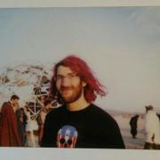
Noah is a Staff Technologist on the Tech Projects team. He works on the various software the EFF produces and maintains, including but not limited to Privacy Badger. Before joining EFF Noah was a researcher at the MIT Media Lab as well as a technomancer and free software/culture advocate.
Manik Taneja is a Product Manager in the product strategy team at Canonical. He leads the strategic direction, product road map, and life cycle of Snappy Ubuntu Core. He has 8+ years of experience with Cloud and Data Center Infrastructure. Manik has previously held roles across Software Engineering, Technical Marketing and Product Management.
Ovais is a MySQL architect, performance engineer, Chef consultant and an open source advocate. Ovais is the co-Founder of TwinDB. He also currently works at Lithium Technologies as a Lead Site Reliability Engineer. Previously, Ovais worked at Percona as a Senior MySQL Consultant and at a few other startups in various capacities.
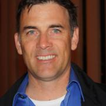
Skilled at taking established and well-known startups in Silicon Valley and bringing them to the public cloud. I engage with them mostly on the technical level, but also dive deep into company’s business models, taking into account future goals, not just current technical requirements. Also skilled at looking for additional ways for companies to leverage the cloud to grow top line revenue. My technical background includes solving deep technical challenges with open source software as well as...
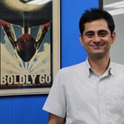
Before co-founding Qubole Ashish ran Facebook’s Data Infrastructure team; under his leadership the team built one of the largest data processing and analytics platforms in the world. This platform achieved not just the bold aim of making data accessible to analysts, engineers and data scientists, but drove the “big data” revolution. In the process of scaling Facebook’s big data infrastructure, he helped drive the creation of a host of tools, technologies and templates that are used industry...
Al is a father, technologist, musician, and SRE at Netflix. While attending Central Michigan University as a music major, Al got into MUDs, C, and Linux, eventually ending up with a career as a sysadmin. Over the last 15 years, Al has worked on everything from kernel hacking to full-stack applications, mostly from inside operations teams.

Robinson has over a decade of experience in FOSS development, organization, & outreach, with an emphasis on Serious Games in medicine, security, & higher education.
Currently serving as the Director of Open Source Strategy at the LOT Network, he was the Senior QA Engineer for The Document Foundation, the German non-profit behind LibreOffice & DLP, as well as coordinator of community outreach & education. At the Interactive Media Lab at the Geisel School of Medicine, he...
Andrew Vagin is interested in Container Virtualization (LXC, OpenVZ). He started to write autotest for OpenVZ in 2006, when he was a student at the Moscow Institute of Physics and Technology (MIPT). Now Andrew works in OpenVZ kernel team. In addition he is an active developer in the CRIU (Checkpoint/Restore in Userspace) project.

Chris Van Tuin, Chief Technologist for the Western US at Red Hat, has over 20 years of experience in IT and Software. Since joining Red Hat in 2005, Chris has been architecting solutions for strategic customers and partners with a focus on emerging technologies including IaaS, PaaS, and DevOps. He started his career at Intel in IT and Managed Hosting followed by leadership roles in services and sales engineering at Loudcloud and Linux startups. Chris holds a Bachelors of Electrical...
Sujeevan Vijayakumaran is a student from Germany and is a long time participant in the Ubuntu Community.

Stephen is a principal program manager in the Azure Office of the CTO and adjunct faculty at Carnegie Mellon University. He has worked with open source software in the product space for 30+ years. He has been a technical executive, a founder and consultant, a writer and author, a systems developer, a software construction geek, and a standards diplomat. Developing software engineering learning experiences for students in the natural lab of well-run open source projects is an area of deep...

Daniel Walsh has worked in the computer security field for over 35 years. Dan is a Consulting Engineer at Red Hat. He joined Red Hat in August 2001. Dan leads the Red Hat Container Engineering team since August 2013, but has been working on container technology for several years. Dan currently focusess on the CRI-O Container Runtime, Buildah for building container images, containers/storage and containers/image. Dan has made many contributions to the Docker project. Dan has also developed a...

Richard's journey into the world of Open Source started back in 1996 after being handed his first set of SlackWare CDs; and was hooked after seeing his first Linux prompt stare back at him. In the early part of his career he deployed open-source technologies such as Linux, GlassFish, Apache, MySQL & PHP to build scalable mobile applications. Today he works as a Production Engineer at Facebook, as the technical lead for GlusterFS on the POSIX Storage Team. His spends his time...
Quinn Weaver is co-founder of PostgreSQL Experts, Inc., a Bay Area database consulting firm.
Adam Wick leads the systems software group at Galois, Inc., an R&D company in Portland, OR. Galois does research in formal methods, programming language development, operating systems, compiler engineering, and security. Dr. Wick has worked in a variety of fields at all level of the software stack, from hardware synthesis to web applications, but has recently focused on network and operating system security.. Amongst his current jobs, he is also the maintainer of the Haskell Lightweight...
Dan Williams is a Research Staff Member in the cloud platforms and services group at T.J. Watson Research Center in Yorktown Heights, NY, He's thrilled to be working on unikernels, especially low-level kernel issues. Before IBM, he received a Ph.D. in computer science at Cornell University, where he worked on virtualization and operating systems.
I am a 12 year student that has been learning "R" for the past year. I have spoken three times at different events. I have spoken twice at Devopsdays and more recently I did an Ignite talk at O'Reilly's Velocity conference in NYC 2015.

John Willis has worked in the IT management for over 40 years. He is researching DevOps, DevSecOps, IT risk, modern governance, and audit compliance. Previously, he was an Evangelist at Docker Inc., VP of Solutions for Socketplane (sold to Docker) and Enstratius (sold to Dell), and VP of Training & Services at Opscode, where he formalized the training, evangelism, and professional services functions at the firm. Additionally, Willis founded Gulf Breeze Software, an award-winning IBM...
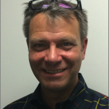
John Wilson has been combating email-based fraud since 2006, when he developed an authentication-based anti-phishing solution as CTO of Brandmail Solutions. John continues his mission to rid the world of email fraud at Agari, a venture-backed startup that helped to develop the DMARC standard. Leveraging DMARC and private-channel email data, John assisted Microsoft and the FS-ISAC with the B54 Citadel botnet takedown by providing data related to Citadel botnet infections and by acting as a...
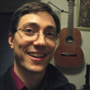
I am a music teacher by trade and got into the world of GNU/Linux after coming to terms with the craziness of copyright in art and education. My questions all along have been about the economics and social structures of how this free/libre/open world works. Although I didn't set out to create a new organization or project, I eventually got convinced by others to help address the issues I was complaining about. The result is a new sustainable patronage system in-the-works at Snowdrift.coop....

Mark Wong is a Software Development Engineer at EDB and is a PostgreSQL Major Contributor. He first introduced himself to the PostgreSQL community in 2003 with open source benchmarking kits and performance data. Since then, he has continued to contribute to various aspects of the community such as a Google Summer of Code mentor, Conference Organizer, Portland PostgreSQL Users Group Co-Organizer, PostgreSQL Fundraising Group Member, and a Director on the Board of the United States PostgreSQL...

I'm a software engineer for Puppet, where I'm currently working on our open source remote task runner Bolt. I graduated from Oregon State University with a BS in Computer Science in June 2016, where I worked as a Front-End Engineer for the OSU Open Source Lab. In my free time I enjoy hanging out with friends, hiking, experiencing new things, and enjoying a wide variety of podcasts, tv shows, blogs, books, and other media.
You can see more of my work at...

Peter Zaitsev is an entrepreneur and co-founder of Percona. As one of the foremost experts on Open Source strategy and database optimization, Peter leveraged both his technical vision and entrepreneurial skills to grow Percona from a two-person shop to one of the most respected open source companies in the business with staff members more than 350. Now Peter continues as a Board Member & Advisor in a range of open source startups. Peter is a co-author of High Performance MySQL:...